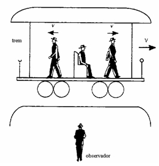
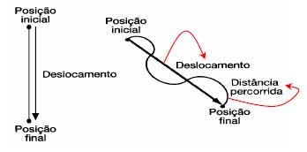
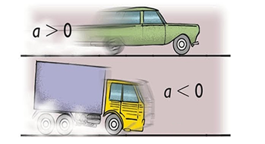
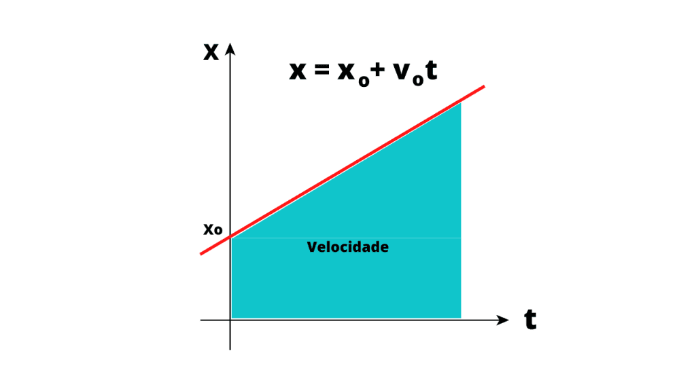
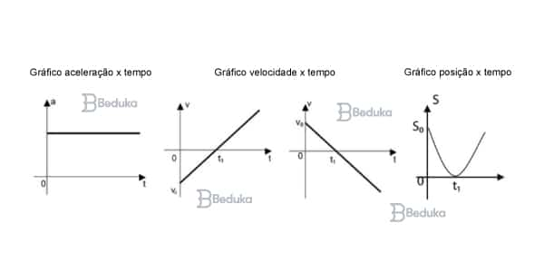
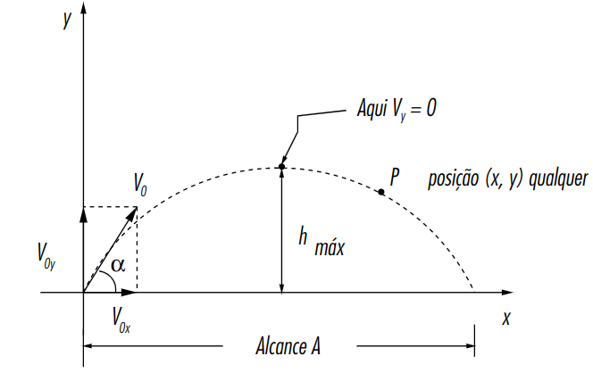
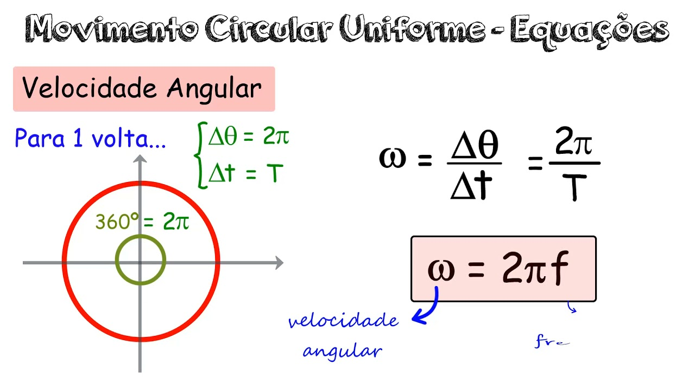
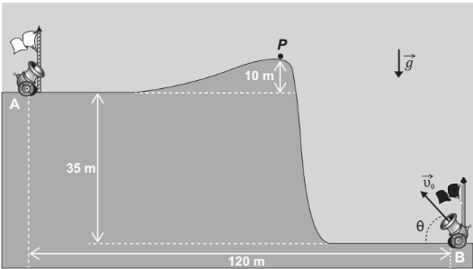

Cinemática: Entendendo o Movimento Passo a Passo
1. O que é Cinemática?
A cinemática é a parte da Física que estuda e descreve o movimento dos corpos sem se preocupar com as causas desse movimento. Em outras palavras, a cinemática responde perguntas como:
- Onde o corpo está em cada instante?
- Quão rápido ele se move?
- Em que direção e em que sentido ele se desloca?
- Como a velocidade muda com o tempo?
A explicação não entra em força, empurrões ou interações (isso é da Dinâmica). Aqui, o foco é descrever com cuidado: posição, deslocamento, velocidade e aceleração.
2. Movimento e Referencial
2.1 Movimento: variação de posição no tempo
Dizemos que um corpo está em movimento quando a sua posição muda com o tempo. Se a posição não muda ao longo do tempo, dizemos que ele está em repouso.
Uma ideia importante é que “estar em movimento” não é uma propriedade absoluta. Depende sempre de com quem ou com o quê você está comparando.
2.2 Referencial
O referencial é o ponto, objeto ou sistema em relação ao qual descrevemos o movimento.
- Dentro de um ônibus em movimento, você pode estar em repouso em relação ao ônibus (pois está sentado), mas em movimento em relação à rua.
Sem referencial, não faz sentido perguntar se algo está “parado” ou “em movimento”. Por isso, toda descrição cinemática parte da escolha de um referencial.
3. Posição, Deslocamento (ΔS) e Distância Percorrida
3.1 Posição
Em problemas de cinemática de ensino médio, é comum usar uma reta numérica para representar a posição de um corpo. Cada ponto da reta corresponde a uma posição, medida por uma coordenada (por exemplo, em metros).
3.2 Deslocamento (ΔS)

O deslocamento é a variação da posição. Se um corpo
sai de uma posição inicial S0 e chega a uma posição final
S, definimos:
ΔS = S - S₀O deslocamento é uma grandeza vetorial: além do valor (módulo), ele tem sentido (por exemplo, positivo ou negativo numa reta).
- De 0 m para 8 m →
ΔS = +8 m. - De 8 m para 0 m →
ΔS = -8 m.
3.3 Distância percorrida
A distância percorrida é o comprimento total do caminho que o corpo fez, sem se importar com o sentido. É uma grandeza escalar.
- Se você vai de 0 m a 8 m e volta a 0 m, a distância percorrida é 16 m, mas o deslocamento total é 0 m.
Em resumo:
- Deslocamento → mudança de posição, com sentido.
- Distância → quanto você “andou”, somando tudo.
4. Velocidade Média e Velocidade Instantânea
4.1 Velocidade média
A velocidade média indica, em média, quão rápido a posição mudou num certo intervalo de tempo. Definição:
vₘ = ΔS / ΔtOnde:
vₘé a velocidade média;ΔSé o deslocamento;Δté o intervalo de tempo considerado.
A fórmula tem essa forma porque velocidade é justamente a “taxa de variação da posição”: quanto a posição muda por unidade de tempo.
Exemplo numérico
Um carro sai de 20 m e chega a 80 m em 10 s.
ΔS = 80 - 20 = 60 mΔt = 10 s
Logo:
vₘ = 60 / 10 = 6 m/s4.2 Velocidade instantânea
A velocidade instantânea é a velocidade em um instante específico (por exemplo, exatamente aos 3,0 s). É o que aparece no velocímetro do carro.
Em termos mais avançados, ela seria obtida fazendo o intervalo de tempo
Δt ficar cada vez menor, aproximando-se de zero. Para o ensino médio,
é suficiente saber que:
- Em um MRU, velocidade média e velocidade instantânea coincidem.
- Em um MRUV, a velocidade varia, então a média e a instantânea não são iguais em geral.
5. Aceleração: Variação da Velocidade
A aceleração mede como a velocidade muda com o tempo. Definição:
a = Δv / ΔtOnde:
aé a aceleração;Δvé a variação da velocidade;Δté o intervalo de tempo.
Se a aceleração é constante, a velocidade aumenta (ou diminui) sempre pelo mesmo valor a cada segundo.
Exemplo numérico
Um corpo passa de 2 m/s para 10 m/s em 4 s.
Δv = 10 - 2 = 8 m/sΔt = 4 s
a = 8 / 4 = 2 m/s²Isso significa que a cada segundo a velocidade aumenta 2 m/s.
6. MRU — Movimento Retilíneo Uniforme
6.1 Características
- Trajetória em linha reta.
- Velocidade constante (nem acelera, nem freia).
- Aceleração zero.
6.2 Função horária da posição
No MRU, a posição varia de forma linear com o tempo:
S(t) = S₀ + v · tOnde:
S(t)é a posição no instantet;S₀é a posição inicial (no instantet = 0);vé a velocidade constante;té o tempo.
A fórmula tem essa forma porque, com velocidade constante, a cada unidade de tempo o corpo avança sempre a mesma quantidade de espaço.
Exemplo numérico
Um corpo está na posição 20 m no instante inicial e move-se com v = 10 m/s em MRU.
S(t) = 20 + 10·t
Em t = 3 s:
S(3) = 20 + 10·3 = 50 m7. MRUV — Movimento Retilíneo Uniformemente Variado
7.1 Características
- Trajetória em linha reta.
- Aceleração constante.
- A velocidade muda de forma uniforme ao longo do tempo.
7.2 Função horária da velocidade
Se a aceleração é constante, a velocidade varia de maneira linear com o tempo:
v(t) = v₀ + a · t
Onde v₀ é a velocidade inicial no instante t = 0.
A ideia é: a cada segundo, a velocidade ganha (ou perde) uma quantidade fixa
igual à aceleração.
7.3 Função horária da posição
Em MRUV, a posição evolui segundo:
S(t) = S₀ + v₀·t + (a·t²)/2
O termo (a·t²)/2 aparece porque, além da velocidade inicial,
a velocidade vai aumentando (ou diminuindo) ao longo do tempo. Quando somamos
todos esses pequenos acréscimos de deslocamento, surge o termo proporcional a
t².
7.4 Equação de Torricelli
Em muitos problemas não se conhece o tempo explicitamente. Nesses casos, é útil a equação:
v² = v₀² + 2·a·ΔSEla relaciona diretamente velocidade, aceleração e deslocamento, sem envolver o tempo.
Exemplo numérico simples
Um corpo parte do repouso (v₀ = 0) com aceleração 4 m/s². Qual é a velocidade após percorrer 10 m?
v² = v₀² + 2·a·ΔS
v² = 0 + 2·4·10
v² = 80
v = √80 ≈ 8,94 m/s8. Queda Livre e Lançamento Vertical
8.1 Aceleração da gravidade (g)
Próximo à superfície da Terra, um corpo em queda livre está sujeito a uma aceleração praticamente constante, chamada aceleração da gravidade, indicada por g.
No ensino médio, costuma-se usar:
g ≈ 10 m/s²(valor aproximado, para facilitar os cálculos).
8.2 Queda livre
Na queda livre, o corpo é liberado e cai sob ação exclusiva da gravidade (desprezando o ar). O movimento é um MRUV com:
- aceleração constante, igual a
gpara baixo; - se ele é solto do repouso, então
v₀ = 0.
Equações (adotando o sentido “para baixo” como positivo)
v(t) = v₀ + g·t
S(t) = S₀ + v₀·t + (g·t²)/2
v² = v₀² + 2·g·ΔS8.3 Lançamento vertical para cima
No lançamento vertical para cima, o corpo é lançado com velocidade inicial para cima, mas a gravidade continua apontando para baixo.
Se escolhemos o sentido “para cima” como positivo, então:
a = -g(aceleração contrária ao movimento inicial).
O corpo sobe, perde velocidade por causa da gravidade, até que em um certo ponto atinge velocidade zero (o ponto mais alto). Depois começa a descer, com velocidade crescendo em módulo, novamente pela ação da gravidade.
Ponto mais alto
No ponto mais alto:
- a velocidade é zero;
- a aceleração continua sendo
-g(apenas a velocidade zera).
9. Movimento Circular Uniforme (MCU)
9.1 Descrição geral
No movimento circular uniforme (MCU), o corpo descreve uma circunferência com velocidade escalar constante. Embora o módulo da velocidade seja constante, a direção muda o tempo todo, o que tem consequências importantes.
9.2 Velocidade angular (ω)
Em MCU, é muito útil trabalhar com o ângulo que o raio (que liga o centro ao móvel) varre ao longo do tempo. A velocidade angular é:
ω = Δθ / ΔtOnde:
ωé a velocidade angular;Δθé a variação do ângulo (em radianos);Δté o intervalo de tempo.
9.3 Relação entre velocidade linear e angular
O comprimento do arco percorrido numa circunferência é dado por:
S = R·θ
onde R é o raio. Se dividirmos ambos os lados pelo tempo:
S / t = R·(θ / t)
Como S/t é a velocidade linear v e
θ/t é a velocidade angular ω, obtemos:
v = ω·R9.4 Aceleração centrípeta
Mesmo com velocidade escalar constante, o MCU possui aceleração, porque a direção da velocidade está mudando continuamente. Essa aceleração, apontando sempre para o centro da circunferência, é chamada aceleração centrípeta:
a_c = v² / REla é responsável por “curvar” a trajetória, mantendo o corpo na órbita circular.
10. Visão Geral e Conexões
A cinemática organiza o estudo do movimento em torno de algumas ideias centrais:
- Referencial: define se algo está em repouso ou movimento.
- Posição, deslocamento e distância: descrevem onde o corpo está e quanto se moveu.
- Velocidade: indica a taxa de mudança da posição.
- Aceleração: indica a taxa de mudança da velocidade.
- MRU: caso simples de velocidade constante.
- MRUV: caso em que a aceleração é constante, gerando equações quadráticas.
- Queda livre e lançamento vertical: aplicações diretas do MRUV com aceleração da gravidade.
- MCU: mostra que mesmo com velocidade constante pode existir aceleração, se a direção variar.
A partir desses blocos, é possível resolver a maioria dos exercícios de cinemática do ensino médio, sempre interpretando com cuidado o que cada grandeza significa fisicamente e escolhendo a equação que melhor se ajusta aos dados do problema.
11. Exercícios Resolvidos de Cinemática
Exercício 1 — Deslocamento x Distância Percorrida
Enunciado. Um estudante caminha ao longo de uma linha reta, partindo da posição 0 m. Primeiro, ele vai até a posição 10 m. Em seguida, retorna até a posição 4 m. Considere o eixo orientado no sentido do movimento inicial.
Calcule:
- (a) O deslocamento total do estudante.
- (b) A distância total percorrida.
Resolução comentada.
O deslocamento é definido como a variação da posição:
ΔS = S - S₀
A posição inicial é S₀ = 0 m e a posição final é S = 4 m (pois ele termina em 4 m).
ΔS = 4 − 0 = +4 mO sinal positivo indica que, em relação à origem, ele terminou 4 m no sentido positivo do eixo.
Já a distância percorrida é o “comprimento do caminho”, somando todos os trechos, sem considerar o sentido.
- Do 0 m até 10 m: percorre 10 m.
- Do 10 m até 4 m: percorre 6 m.
Distância total = 10 m + 6 m = 16 mResposta.
- (a) Deslocamento:
+4 m. - (b) Distância percorrida:
16 m.
Exercício 2 — Velocidade Média em MRU
Enunciado. Um carro se desloca em linha reta com movimento retilíneo uniforme. Em t = 0 s, ele está na posição S₀ = 30 m. Em t = 20 s, ele está na posição S = 230 m.
(a) Determine a velocidade média do carro nesse intervalo.
(b) Encontre a função horária da posição S(t), assumindo que o movimento é MRU com essa mesma velocidade.
Resolução comentada.
A velocidade média em linha reta é:
vₘ = ΔS / ΔtCalculando o deslocamento:
ΔS = S − S₀ = 230 − 30 = 200 mO intervalo de tempo é:
Δt = 20 − 0 = 20 sLogo:
vₘ = 200 / 20 = 10 m/sEm MRU, a função horária da posição é:
S(t) = S₀ + v·t
Usando S₀ = 30 m e v = 10 m/s:
S(t) = 30 + 10·tResposta.
- (a)
v = 10 m/s. - (b)
S(t) = 30 + 10·t(com S em metros e t em segundos).
Exercício 3 — MRUV com Aceleração Constante
Enunciado. Um corpo parte do repouso em uma trajetória retilínea, com aceleração constante de 2 m/s². Considere S₀ = 0 m.
Calcule:
- (a) A velocidade do corpo após 6 s.
- (b) A posição do corpo no instante
t = 6 s.
Resolução comentada.
Em MRUV, a velocidade em função do tempo é dada por:
v(t) = v₀ + a·t
Como o corpo parte do repouso, v₀ = 0. A aceleração é a = 2 m/s².
v(6) = 0 + 2·6 = 12 m/sA posição em função do tempo é:
S(t) = S₀ + v₀·t + (a·t²)/2
Com S₀ = 0, v₀ = 0 e a = 2 m/s²:
S(6) = 0 + 0·6 + (2·6²)/2
S(6) = (2·36)/2
S(6) = 72/2
S(6) = 36 mResposta.
- (a)
v(6) = 12 m/s. - (b)
S(6) = 36 m.
Exercício 4 — Queda Livre (Sentido para Baixo Positivo)
Enunciado. De uma janela a 20 m de altura em relação ao solo, uma pedra é simplesmente solta (queda livre), sem velocidade inicial. Adote o sentido vertical para baixo como positivo e considere g = 10 m/s².
Determine:
- (a) O tempo que a pedra leva para alcançar o solo.
- (b) A velocidade com que chega ao solo.
Resolução comentada.
Em queda livre, com sentido “para baixo” positivo, temos:
S₀ = 0(posição inicial na janela);S = 20 m(posição do solo);v₀ = 0(solta do repouso);a = g = 10 m/s².
Usamos a função horária da posição:
S(t) = S₀ + v₀·t + (a·t²)/2Substituindo:
20 = 0 + 0·t + (10·t²)/2
20 = 5·t²
t² = 4
t = 2 sO tempo de queda é 2 s (descartando o valor negativo, que não tem sentido físico aqui).
Para a velocidade ao chegar ao solo, usamos:
v(t) = v₀ + a·t
Com v₀ = 0, a = 10 m/s² e t = 2 s:
v(2) = 0 + 10·2 = 20 m/sO sinal é positivo, indicando que a velocidade está no sentido escolhido como positivo (para baixo).
Resposta.
- (a)
t = 2 s. - (b)
v = 20 m/s(para baixo).
Exercício 5 — Movimento Circular Uniforme
Enunciado. Um ponto material se move em uma circunferência de raio R = 2 m descrevendo um movimento circular uniforme. Ele completa 5 voltas em 10 segundos.
Determine:
- (a) A velocidade angular
ωem rad/s. - (b) A velocidade linear
v. - (c) A aceleração centrípeta
a_c.
Resolução comentada.
Primeiro, calculamos o ângulo total percorrido em radianos. Uma volta completa corresponde a 2π rad.
Em 5 voltas:
Δθ = 5 · 2π = 10π rad
O tempo total é Δt = 10 s. A velocidade angular é dada por:
ω = Δθ / Δt = 10π / 10 = π rad/sPara a velocidade linear, usamos a relação:
v = ω·R
Com ω = π rad/s e R = 2 m:
v = π · 2 = 2π m/sA aceleração centrípeta é:
a_c = v² / R
Substituindo v = 2π e R = 2:
a_c = (2π)² / 2
a_c = 4π² / 2
a_c = 2π² m/s²Resposta.
- (a)
ω = π rad/s. - (b)
v = 2π m/s. - (c)
a_c = 2π² m/s².
12. Questão Resolvida — ENEM 2021 (Q.128)
Enunciado da Questão
A figura foi extraída de um antigo jogo de computador chamado Bang! Bang!. No jogo, dois competidores controlam canhões A e B, disparando alternadamente balas com o objetivo de atingir o adversário. Cada disparo exige a escolha de um valor estimado para a velocidade inicial e para o ângulo de disparo.
No jogo, dois competidores controlam os canhões A e B, disparando balas alternadamente com o objetivo de atingir o canhão do adversário; para isso, atribuem valores estimados para o módulo da velocidade inicial de disparo (V0) e para o ângulo de disparo (0).
Em determinado momento de uma partida, o competidor B deve disparar; ele sabe que a bala disparada anteriormente, 0 = 53°, passou tangenciando o ponto P.
No jogo, g é igual a 10 m/s². Considere sen 53° = 0,8; cos 53° = 0,6 e desprezível a ação de forças dissipativas.
Disponível em: http://mebdownloads.butzke.net.br. Acesso em: 18 abr. 2015 (adaptado).
Com base nas distâncias dadas e mantendo o último ângulo de disparo, qual deveria ser, aproximadamente, o menor valor de que permitiria ao disparo efetuado pelo canhão B atingir o canhão A?
Alternativas: a) 30 m/s; b) 35 m/s; c) 40 m/s; d) 45 m/s; e) 50 m/s
Estratégia da Resolução
Para que o tiro atinja o canhão A, o ponto A (que está a 120 m na horizontal e 35 m acima de B) deve pertencer à trajetória parabólica do projétil. Assim, usamos a equação da trajetória de um lançamento oblíquo:
y = x·tan(θ) − (g·x²) / (2·v₀²·cos²θ)
Essa fórmula vem de substituir o tempo t da equação horizontal na equação vertical, eliminando o tempo e obtendo a curva diretamente em função de x e y.
Aplicamos então as coordenadas do ponto A:
- x = 120 m
- y = 35 m
- θ = 53° → tan(53°) = 4/3
- g = 10 m/s²
- cos²(53°) = (0,6)² = 0,36
Substituição na Equação da Trajetória
35 = 120·tan(53°) − (10·120²) / (2·v₀²·0,36)Como tan(53°) = 4/3:
35 = 160 − (10·14400)/(0,72·v₀²)Efetuando a divisão:
(10·14400)/0,72 = 200000Então:
35 = 160 − (200000 / v₀²)Isolando v₀²:
200000 / v₀² = 125
v₀² = 200000 / 125
v₀² = 1600
v₀ = 40 m/sConclusão
A velocidade inicial mínima que faz a parábola passar exatamente pelo ponto A, mantendo θ = 53°, é:
40 m/s
Alternativa correta: C.
Qualquer valor menor que 40 m/s faz a bala cair antes; valores maiores passam acima do alvo.
Por isso, 40 m/s é a velocidade mínima que realmente acerta o canhão A.